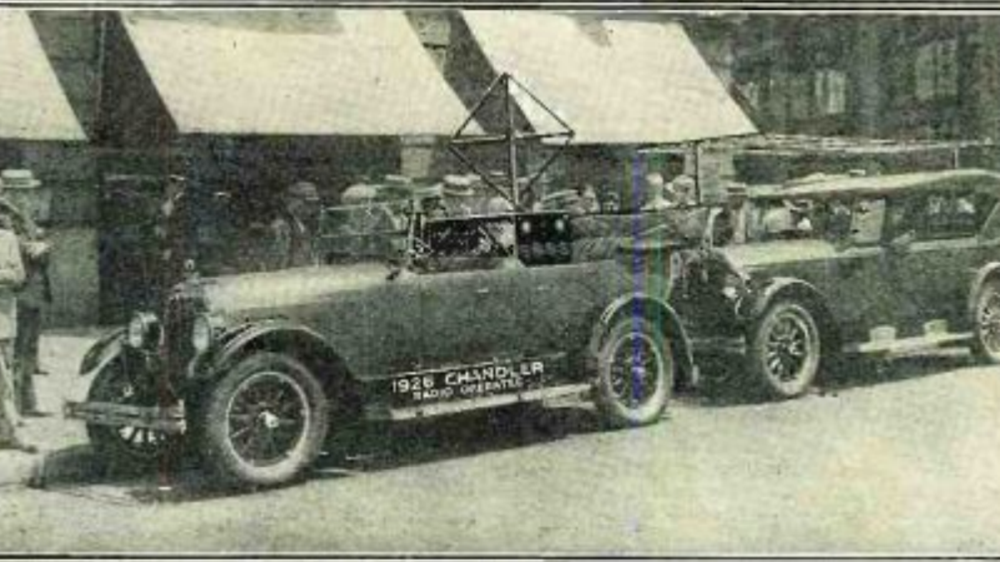
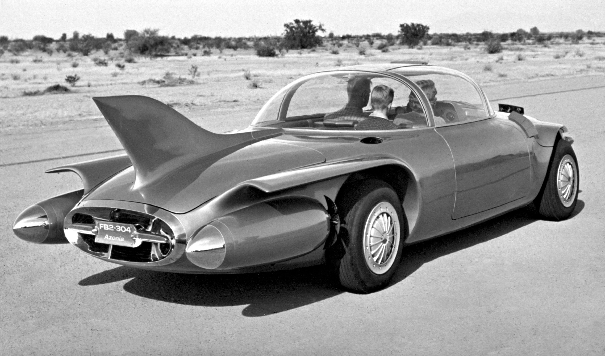
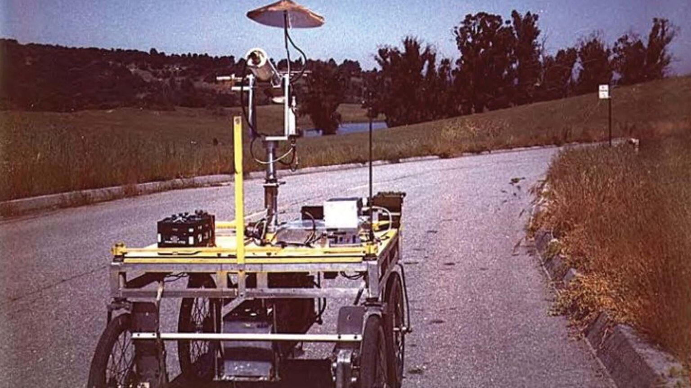
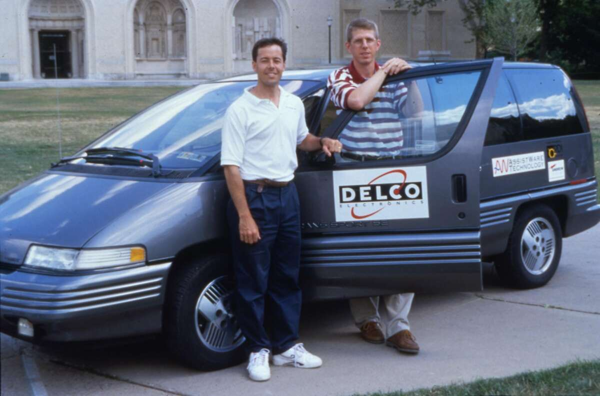

napísal Matúš Lipničan - 16.4.2022
Preteky veľkých spoločností a výskumných inštitúcií o komerčné autonómne vozidlá sú na dobrej ceste. Majú potenciál masívne zmeniť spôsob, akým vnímame a využívame dopravu. Ako sme sa však dostali k tejto futuristickej inovácii, ktorá sa v istom momente zdala úplne nemožná?
Vieme, čo si myslíte - autonómne autá v roku 1500? Áno, správne! Ale verte alebo nie, prvá myšlienka autonómneho auta bola v skutočnosti navrhnutá o niekoľko storočí skôr ako prvé auto. V roku 1500 Leonardo da Vinci vytvoril vozík, ktorý sa mohol pohybovať bez toho, aby ho niekto tlačil alebo ťahal. Pohon zabezpečovali pružiny pod vysokým napätím a riadenie bolo vopred nastavené tak, aby sa vozík mohol pohybovať po vopred určenej dráhe. Toto zariadenie sa niekedy označuje aj ako prvý robot na svete.
V roku 1925 vynálezca Francis Houdina predviedol rádiom riadené auto v uliciach Manhattanu bez toho, aby niekto sedel za volantom. Rádio dokázalo naštartovať motor, zaradiť rýchlostný stupeň a zatrúbiť. Toto auto ponúklo pohľad do budúcnosti autonómie, ale bolo rýchlo odstavené, keď obsluha počas jazdy dvakrát stratila kontrolu a narazila do iného vozidla. Napriek tomuto prvému neúspechu sa priemysel nevzdal nádeje na diaľkovo ovládané autá.
Na svetovej výstave v roku 1939 vytvorila spoločnosť General Motors prvý model samojazdiaceho auta. Bolo to elektrické vozidlo riadené elektromagnetickým poľom a ovládané pomocou zmagnetizovaných kovových hrotov zapustených do vozovky. Tento model sa stal skutočnosťou v roku 1958. Auto obsahovalo senzory, ktoré dokázali zistiť prúd tečúci cez drôt zapustený do cesty. Prúdom sa dalo manipulovať a pohybovať volantom doľava alebo doprava.
Na vrchole vesmírnych pretekov v roku 1961 začali výskumníci uvažovať o tom, ako pristáť na Mesiaci. James Adams preto vytvoril Stanfordský vozík, ktorý bol vybavený kamerami a naprogramovaný tak, aby autonómne zisťoval a sledoval čiaru na zemi. Išlo o prvé použitie kamier v autonómnych vozidlách - dôležitý prvok v dnešných autonómnych vozidlách. V roku 1977 Japonci vylepšili túto myšlienku kamerovým systémom, ktorý prenášal údaje do počítača na spracovanie obrazu cesty. To viedlo k testovaniu prvého samostatne jazdiaceho osobného vozidla na svete, ktoré mohlo dosiahnuť rýchlosť až 20 míľ za hodinu.
V roku 1990 začala univerzita Carnegie Mellon vytvárať samojazdiace autá, pričom do spracovania obrazu a riadenia integrovala neurónové siete. V roku 1995 výskumníci z Carnegie Mellon vyrazili so svojím samojazdiacim autom s názvom NavLab 5 na cestu a prešli 2 797 míľ z Pittsburghu do San Diega. Kontrolovali rýchlosť a brzdenie, ale auto bolo inak autonómne.
Začiatkom roku 2000 sa priemysel autonómnych vozidiel rozbehol naplno. Výskumná jednotka amerického ministerstva obrany DARPA sponzorovala sériu výziev na urýchlenie vývoja autonómnych vozidiel. V roku 2004 zorganizovali súťaž, ktorej cieľom bolo vyzvať vozidlá, aby samé prešli 150 míľ dlhú cestu v púšti. Žiadne auto túto trasu nedokončilo. V roku 2007 sa v rámci tejto výzvy simulovalo 60 míľ dlhé mestské prostredie; tentoraz trasu dokončili štyri autá. V polovici roka 2010 sa do boja o samojazdiacu technológiu pustili veľké automobilky ako Ford, Mercedes-Benz a BMW, ako aj programy na zdieľanie jázd, napríklad Uber. Ukázalo sa však, že skutočnú autonómiu je ťažšie dosiahnuť, ako sa pôvodne predpokladalo, a mnohé z týchto spoločností nakoniec ukončili svoju činnosť. Najmä v roku 2020 spoločnosť Uber oznámila, že od svojich pokusov o samojazdiace vozidlá ustupuje v dôsledku bezpečnosti, súdnych sporov a straty peňazí.
Od roku 2021 je najbližšie k uvedeniu autonómnych vozidiel na trh spoločnosť Tesla so svojím balíkom Full Self-Driving, ktorý umožňuje autonómne hands-free ovládanie pri jazde po diaľnici a rýchlostnej ceste. Tieto autá však nie sú autonómne podľa žiadneho meradla. Nemecká vláda dokonca požiadala spoločnosť Tesla, aby prestala používať tento termín. Ani medzi týmito prelomovými inováciami nie sú žiadne plne autonómne vozidlá komerčne dostupné na predaj. V súčasnosti však už fungujú stovky autonómnych vozidiel vo významných priemyselných odvetviach, ako je napríklad baníctvo. Od mája 2021 autonómne nákladné vozidlá spoločnosti Caterpillar bezpečne odviezli viac ako 3 miliardy ton materiálu len za 7 rokov prevádzky. Úspech autonómnych vozidiel v ťažobnom priemysle dáva určitú nádej pre prekážky, ktorým čelia autonómne vozidlá
Samojazdiace autá využívajú na vnímanie okolia množstvo senzorov, ako sú
radar, lidar, sonar, GPS a odometria.
Pokročilé riadiace systémy interpretujú senzorické informácie na
identifikáciu najrýchlejších a najefektívnejších navigačných ciest, ako
aj prekážok a relevantného značenia.
Autonómia vo vozidlách sa často rozdeľuje do šiestich úrovní podľa
systému, ktorý vyvinula Spoločnosť automobilových
. inžinierov (SAE): úroveň 0 - žiadna automatizácia; úroveň 1 -
ovládanie rukami/zdieľané ovládanie; úroveň 2 - ovládanie rukami; úroveň
3 - vypnuté oči; úroveň 4 - vypnutá myseľ a úroveň 5 - plne samojazdiace
vozidlo. Inými slovami, volant je voliteľný.
Ešte stále však neexistujú plne samojazdiace autá. V súčasnosti je
maximálna úroveň autopilota na úrovni 2. Napríklad
autopilot spoločnosti Tesla